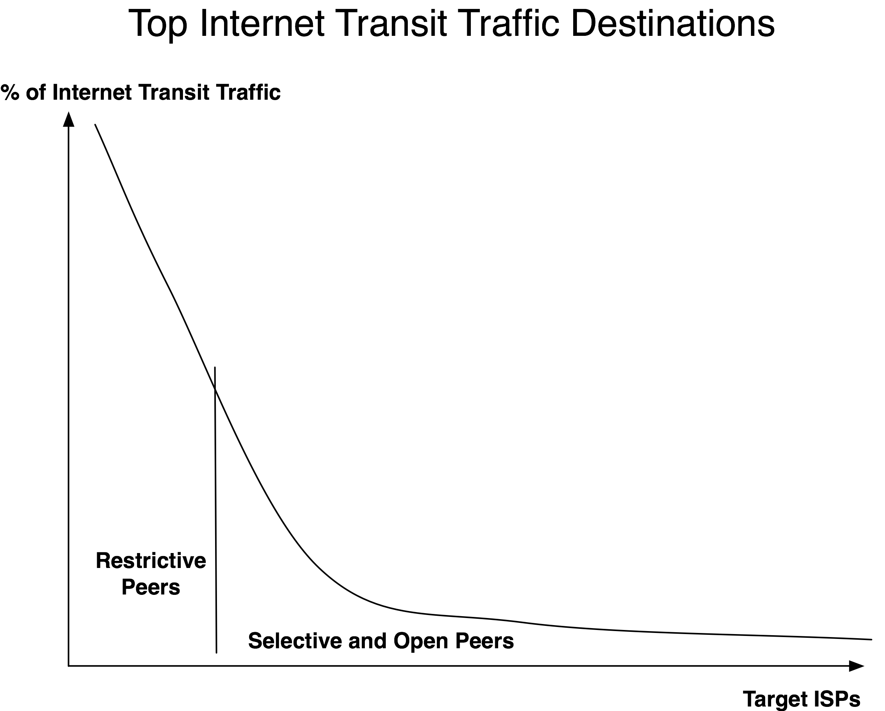
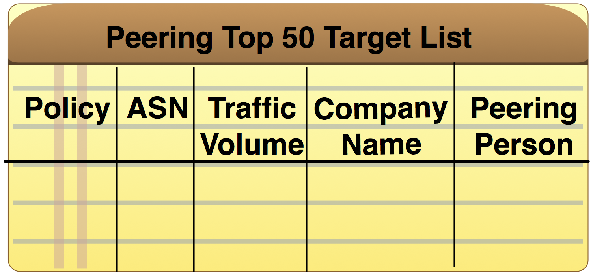
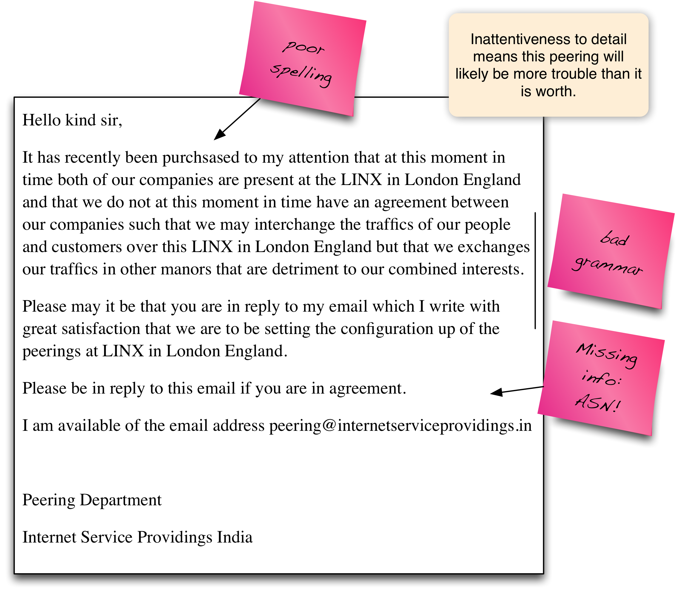
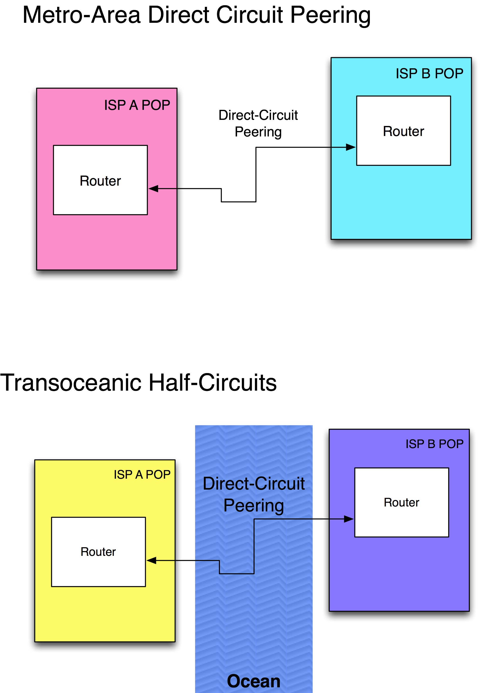
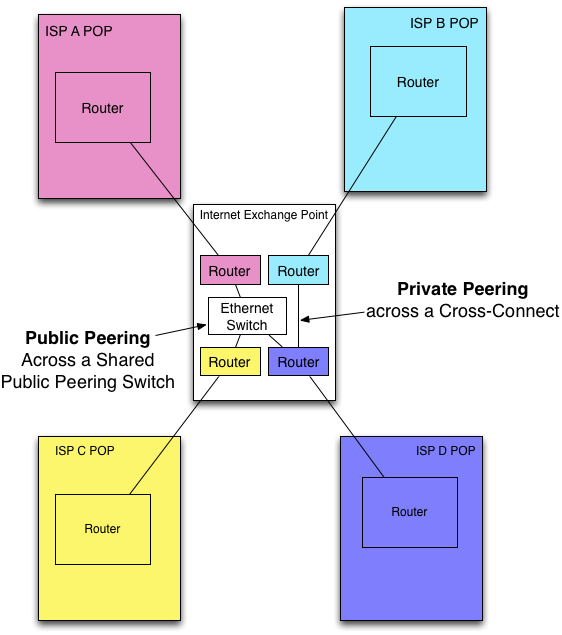

The Internet Peering Process
Internet Peering has essentially three phases:
- Phase 1 – Identification of Peering Target
- Phase 2 – Contact, Qualification, and Peering Negotiation
- Phase 3 – Peering Implementation
We will examine each peering negotiation phase in turn. This section speaks from the perspective of an ISP exploring whether peering makes sense. Most ISPs go through these processes, and later on we will see that they apply to content providers as well.
Phase 1 – Identification of Peering Target
The first process is identifying the set of potential peering targets. ISPs determine where their traffic is going to and coming from. They are looking for peering partners that should be similarly incentivized to directly interconnect their network, to save money, to improve performance, etc., as shown in Figure 4-5.

Figure 4-5. Traffic analysis helps identify potential peers.
For example, in the figure, ISP A would look at its traffic and determine that a large volume of traffic goes to or comes from ISP B. Since both ISP A and ISP B are paying transit fees for that traffic exchange, it might be in both parties’ interest to “peer” with each other.
This traffic analysis is done with NetFlow or other traffic management software such as PeakFlow provided by Arbor Networks. The result of this analysis is a top 50 list of networks sorted by traffic volume. When sorted, a typical transit traffic histogram looks something like the graph shown in Figure 4-6.

Figure 4-6. Traffic distribution follows a power law.
The bad news is that the top traffic sources and sinks are typically the larger ISPs that do not peer openly. These top destinations represent a large chunk of traffic that is ultimately not peerable; if you are a typical small or medium-sized ISP, these ISPs simply will not peer with you (we will discuss why later). The remainder of the traffic, however, is potentially “peerable.”
Once the top traffic destinations are identified and associated with specific ISPs, these ISPs are targeted for potential peering relationship discussions. Figure 4-7 shows a sample “Peering Top 50 list” template – peering coordinators use some form of this template to help them systematically track their interactions and progress with new potential peers.
These target peers are ordered by traffic volume and sometimes color-coded to reflect the likelihood of obtaining peering.

Figure 4-7. Worksheet for prioritizing and tracking peering discussions.
Phase 2 – Contact, Qualification, and Peering Negotiation
ISPs typically have a person or group specifically tasked with peering and traffic engineering issues. For example, Verizon has a “Peering Steering Committee” to evaluate peering requests, a structure now common in many of the larger ISPs.
Interviews I have had with ISPs have highlighted a key challenge: Finding the right person to speak with at the target ISP is more difficult than you might expect; in fact, it is a time-intensive process.
Peering coordinators change jobs, and there is no single standard way to find out who handles this task. Even if the name is known, peering coordinators are often traveling, way behind in e-mail, and prioritizing e-mail based on the subject or the sender. In this area, “people networking” helps a great deal, and hiring experts for their contacts speeds this initial contact process up significantly.
Next we will enumerate the most effective ways to put target ISPs in context.
Notes from the field.
Tier 1 ISP Operations Meetings
There are also “restrictive” operations meetings, such as the Tier 1 ISP operations and interconnection meetings. These meetings are not advertised anywhere since the Tier 1 ISPs all know each other, and the sole focus is on planning for interconnection growth among those Tier 1 ISPs who are already peering. I was invited to one of these meetings to present my first white paper, “Interconnection Strategies for ISPs,” which documented the math that justified building into an IXP with dark fiber to decrease the cost of interconnection. I don’t include these meetings in the list above, since they would not be an effective avenue for acquiring peering.
The top 10 ways seasoned peering coordinators contact target ISPs follow:
- Face-to-face at informal meetings in an “open” Internet Operations forums like NANOG, IETF, RIPE, APNIC, AFNOG, etc. (Here “open” means anyone can attend.)
- Face-to-face at “selective” commercially sponsored peering forums like the Global Peering Forum (Here “selective” means there are some prerequisites to attend, like being a customer of a GPF IXP sponsor.)
- Face-to-face at “selective” IXP Member Meetings like DE-CIX, LINX, or AMS-IX member meetings
- Via introductions made through an IXP Chief Technical Liaison or a peer who knows the right contact
- Via electronic mail, using the pseudo standard peering@ispdomain.net or a personal contact
- From contacts listed on an exchange point participant list, or peeringdb registrations
- With tech-c or admin-c from DNS or ASN registries
- Through a search for “peering contact $ASN peering”
- From the target ISP sales force, at a trade show or as part of the sales process
- From the target ISP NOC
A short aside about e-mailing peering requests:
Peering request e-mails are among the easiest e-mails to ignore. Many ISPs pass peering e-mail duties around on a weekly basis, with many engineers viewing the peering activity as “not real engineering.” Some sneeringly view peering work as secretarial in nature. Therefore, e-mail messages that are poorly written or missing information are much less likely to receive a reply. It is worth your time to write the peering request carefully and completely.
Peering requests need to include the relevant information. Peering request e-mail messages that fail to include the necessary information will delay or prevent peering from occurring. Including too much information is also a problem; the request may be perceived as too burdensome. Figure 4-8 illustrates the point with a real-world example of a poorly worded peering request.

Figure 4-8. Example of a poorly worded peering request.
A Better Peering Request
The template shown in Figure 4-9 is based on a sample peering template from Serge Radovcic (from Euro-IX at the time):
“I put this together a few years ago. I did this by first looking through several peering coordinators’ e-mails that they had passed on to me, and after putting together a first draft I sent it back to three or four coordinators and I ended up with the draft I sent you.”
Figure 4-9. A template for a better peering request.
Serge goes on to say, “My original idea was based on a conversation that we had a few years ago where we would ask some peering coordinators from different countries to translate this letter and we would then automate the languages to what the Requestor and Requestee needed.”
The full template is available at: http://scripts.drpeering.net/pr3.html
Peering and Interconnection Contracts and Negotiations
Next, if a discussion is scheduled, mutual nondisclosure agreements (NDAs) may be negotiated and signed, and a discussion of Peering Policy and prerequisites then follows.
Note that NDAs are an optional step, and many ISPs do not require signed NDAs prior to discussions.
Traffic engineering discussions and data disclosure may be needed to justify the peering relationship. Each ISP typically has a set of requirements for peering. During these discussions both sides explore the peering prerequisites such as peering at some number of geographically distributed locations, or peering at specific public exchange points.
Traffic volume is often a key determinant. As a rule, the decision hinges upon whether or not there is sufficient value from peering to justify spending time and money. A Bilateral Peering Agreement (BLPA) is the legal form that details each party’s understanding of acceptable behavior, and it legally defines the arms-length (loosely coupled) relationship that each side agrees to.
In some cases the effect on the business is also examined. Might this “peer” be a customer? How will peering impact the network?
After this initial discussion, either party may decide to walk away from the peering discussions until certain criteria are met. If both parties agree that their requirements are sufficiently met, they discuss interconnect methods as described next.
Phase 3 – Implementation of Peering Session
Regional interconnection has two dominant forms: The Direct-Circuit Peering model and the Internet Exchange Point peering model.
The Direct-Circuit Peering Model
Definition: Direct-Circuit Peering is peering using a point-to-point circuit.
This peering model doesn’t require additional Points of Presence (POPs), nor does it require the deployment of additional hardware; the two peers simply purchase a circuit between their existing POPs. If there is a failure in the interconnection, only three parties are involved: the two ISPs and the circuit provider.
The Direct-Circuit Peering model has two dominant uses:
First, Metro-area Direct-Circuit Peering is used between two parties that seek interconnection with only a few other parties within the metro area. If more than one interconnect region is required, the two parties often split the interconnect costs by alternating who pays for each additional regional interconnection (Figure 4-10).
The second place you will see the Direct-Circuit Peering model is with “transoceanic half-circuits,” interconnections between the large incumbent ISPs that seek interconnection without the foreign peer having a local presence in their home markets. This interconnection model is sometimes called “half-circuits” because each party pays for half of the cost.
The Direct-Circuit Peering cost model scales linearly; the more interconnections one has, the more it costs to interconnect. Every additional peer incurs the cost of an additional point-to-point metro circuit.

Figure 4-10. Metro-area Direct-Circuit Peering.
Notes from the field.
Benefits of Peering < Benefits of Protecting Home Market
John Milburn brought up an excellent point about half-circuit peering. He said, “the benefits of peering are dwarfed by the desire to protect one’s home market.” By this he means that it may cost more money to build into another region and peer there. It may cost more money to pay for half of a transoceanic cable and peer in the middle of the ocean. However, the primary motivation for these ISPs is to “own” the home market and not make it easy for other ISPs to build in to their home market and compete with them. If they peer abroad, a peer could still build into their home market and offer Internet Transit services, but traffic to the incumbent’s customers would have to traverse an ocean twice before being delivered to the incumbent’s customers. This offering is not a very compelling one in a market where most traffic is between customers in the home market. If the ISP peered in its home market, then the peer could easily undercut the price and provide a reasonably low-latency service within the home market.
The Internet Exchange Point Peering Model
The alternative to the Direct-Circuit Peering model is to peer at an Internet Exchange Point.
Definition: An Internet Exchange Point (IXP) is a place where multiple ISPs interconnect their networks together (Figure 4-11).
Potentially many peering sessions can be established across a single well-populated IXP peering fabric.

Figure 4-11. The IXP model.
Notes from the field.
Tier 1 ISPs Migrate From Metro Circuits to Carrier-Neutral Exchange Points
In the early days of the U.S. Internet Peering Ecosystem, the largest ISPs in the U.S. interconnected their networks together using direct circuits. They ordered circuits between their POPs in a region from a local carrier. These circuits were sometimes delayed up to 18 months past the due date. Traffic management for the two parties became a very tough challenge, as they had to route their peering traffic along a more circuitous, uncongested path until the new regional circuits were in place. This situation led to a large-scale build into carrier-neutral data centers and explains why the IXP model is now the method predominantly used for interconnection at the core of the Internet.